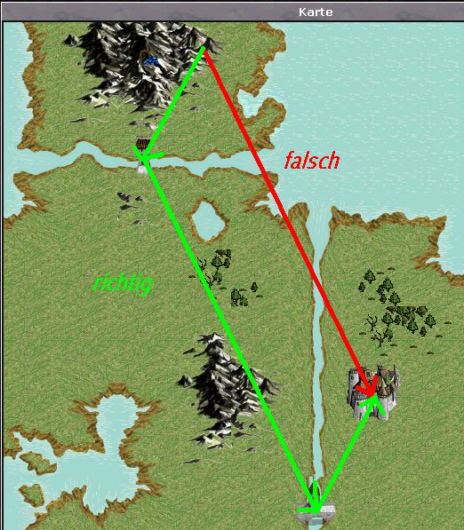

Karawanen
Jeder Spieler kann bis zu zwei Karawanen-Routen einrichten. Auf diesen können sich automatisch bewegende Einheiten fortbewegen, die bestimmte Funktionen erfüllen.
Eure Routen könnt ihr über die Übersicht einsehen. Dort könnt ihr auch die Routen abschliessen und Vorräte einlagern. Der Einsatz legt fest, wie viel der Vorräte bei der nächsten Runde mitgenommen werden sollen und wird beim Start vom Vorrat abgezogen. Auch das Nachfüllen von Vorräten wird dort gemacht
Die Einrichtung von Routen läuft über 3 Punkte, die alle über die Detailansicht des Geländes aufgerufen werden können.
1. Route beginnen
Hierfür muß man auf eine Stadt seiner Wahl gehen. Nun gibt es 2 Möglichkeiten, den jetzt notwendigen Bildschirm aufzurufen: Entweder man wählt "besetzt" (kann auch "neutral" sein) neben dem Punkt "Gelände" oder klickt auf "Weitere Aktionen". Dann gibt es den Punkt "Route neu beginnen". Die Stadt ist dann automatisch auch der erste Wegpunkt.
2. Route fortsetzen
Hierfür geht ihr auf ein beliebiges Feld eurer Wahl und wählt "Route fortsetzen". Wenn ihr den Punkt auf einer Stadt setzt, wird die Stadt angesteuert und dort Station gemacht. Ihr setzt also die Route jetzt über mehrere Punkte fort. Vom letzen Punkt, den ihr setzt, muß der Ausgangspunkt wieder erreichbar sein können. Die Route nimmt immer den kürzesten Weg (also zuerst diagonal) zwischen den beiden Punkten und ist in der Lage, einzelne Hindernisse und kleine Ecken in der Landschaft zu umgehen (1-Feld-Hindernisse), aber bei größeren Hindernissen oder umfangreicheren Gebieten, die umlaufen werden müssen (z.B. See) ist es ratsam, zur Sicherheit einen eindeutig erreichbaren Wegpunkt am See/Hindernis vorbei zu platzieren, damit die Karawane nicht ratlos am See hin und herläuft und nicht weiß wie sie vorbeikann. Setzt lieber einige eindeutige Wegpunkte zuviel als einen zuwenig, denn im letzteren Fall müßt ihr die komplette Route erneut legen. Karawanen können *nicht* über Tempel laufen, d.h. in diesem Falle müßt ihr einen Weg um den Tempel herum festlegen.
3. Route beenden
Die Route wird aktiviert und kann ab sofort von einer Einheit befahren werden.
Vom letzen Wegpunkt aus, muß die Startstadt wieder erreichbar sein. D.h. ihr müßt den Rückweg *auch* festlegen.
Beispiel für die Routenfestlegung:

Karawanenarten
Handelskarawane
Hat Waren als Einsatz und bringt zufällige Waren zurück.
Schmugglerkarawane
Hat Waren als Einsatz und bringt GS zurück. Hierbei ist zu beachten, daß aus der Start- und aus der Endstadt beim Ankommen der Karawane in der Startstadt GS aus der Stadtkasse verschwinden (Einwohner, wenn die Stadt zu arm ist).
Plündererkarawane
Hat AP als Einsatz und bringt GS zurück. Hierbei ist zu beachten, daß aus der Start- und aus der Endstadt beim Ankommen der Karawane in der Startstadt GS aus der Stadtkasse verschwinden (Einwohner, wenn die Stadt zu arm ist).
Gauklerkarawane
Hat AP als Einsatz und bringt GS zurück
Gehen durch eine Karawane Einwohner verloren sind dies 10% des "eigentlichen" Verlustes in Gold, maximal 25% der Bevölkerung pro Karawane. Für einen Bürgermeister heißt das, daß er immer auf einen ausreichenden Goldbestand für Notfälle achten sollte, da sonst seine Stadt einer großen Gefahr ausgesetzt ist, auf diesem Wege zu einer Neuwahl gezwungen zu werden.
Karawanen können überfallen und vernichtet werden, je 100 AP. Bei Vernichtung startet die Karawane neu, bei Überfall verliert sie einen Teil ihrer Vorräte. Derjenige erhält auch noch Bösartigkeit. Dazu muss derjenige auf dem Selben Feld sein, wie die Karawane. Einen wirklichen Schutz gibt es nicht, daher ist es riskant Karawanen zu unterhalten.
Der Ertrag errechnet sie wie folgt:
Faktorentfernung = 1
wenn Entfernung>30 Faktorentfernung = 1,2
wenn Entfernung>40 Faktorentfernung = 1,3
wenn Entfernung>50 Faktorentfernung = 1,5
wenn Entfernung>60 Faktorentfernung = 1,7
wenn Entfernung>75 Faktorentfernung = 2
wenn Entfernung>100 Faktorentfernung = 3
wenn Entfernung>150 Faktorentfernung = 4
wenn Entfernung>200 Faktorentfernung = 5
wenn Entfernung>250 Faktorentfernung = 6
wenn Entfernung>300 Faktorentfernung = 8
wenn Entfernung>400 Faktorentfernung = 12
wenn Entfernung>500 Faktorentfernung = 18
wenn Entfernung>1000 Faktorentfernung = 30
Faktorkarawanen = 1,5
wenn Karawanen>1 dann Faktorkarawanen = 1,25
wenn Karawanen>2 dann Faktorkarawanen = 1
wenn Karawanen>3 dann Faktorkarawanen = 0,75
wenn Karawanen>4 dann Faktorkarawanen = 0,7
wenn Karawanen>8 dann Faktorkarawanen = 0,65
wenn Karawanen>10 dann Faktorkarawanen = 0,6
wenn Karawanen>12 dann Faktorkarawanen = 0,55
wenn Karawanen>14 dann Faktorkarawanen = 0,5
wenn Karawanen>17 dann Faktorkarawanen = 0,475
wenn Karawanen>20 dann Faktorkarawanen = 0,45
wenn Karawanen>23 dann Faktorkarawanen = 0,425
wenn Karawanen>26 dann Faktorkarawanen = 0,4
wenn Karawanen>29 dann Faktorkarawanen = 0,375
wenn Karawanen>32 dann Faktorkarawanen = 0,35
wenn Karawanen>35 dann Faktorkarawanen = 0,325
wenn Karawanen>38 dann Faktorkarawanen = 0,3
wenn Karawanen>41 dann Faktorkarawanen = 0,275
wenn Karawanen>44 dann Faktorkarawanen = 0,25
wenn Karawanen>47 dann Faktorkarawanen = 0,225
wenn Karawanen>50 dann Faktorkarawanen = 0,2
wenn Karawanen>53 dann Faktorkarawanen = 0,175
wenn Karawanen>56 dann Faktorkarawanen = 0,15
wenn Karawanen>59 dann Faktorkarawanen = 0,125
wenn Karawanen>62 dann Faktorkarawanen = 0,1
wenn Karawanen>65 dann Faktorkarawanen = 0,075
wenn Karawanen>68 dann Faktorkarawanen = 0,05
wenn Karawanen>71 dann Faktorkarawanen = 0,025
wenn Karawanen>74 dann Faktorkarawanen = 0
Ertrag = Einsatz * Faktorkarawanen * Faktorentfernung
"Karawanen" ist die Anzahl der Karawanen, die die Stadt (gemeint ist die Stadt in der die Karawane beginnt und endet) beliefern (d.h. auch mindestens einmal angekommen sind). Dabei gelten auch Karawanen die in den letzten 10 Tagen gelaufen sind (egal ob sie in dem Zeitraum ankamen). "Entfernung" ist die Entfernung in Feldern zwischen den beiden angelaufenen Städten (Start- und Endstadt).
Der maximale Einsatz pro Tour ist gleich der halben Einwohnerzahl der kleinsten Stadt, die die Karawane auf ihrem Weg bereist. Eine Karawane beginnt ihre Tour sobald mindestens 100 Vorräte zur Verfügung stehen und läuft dann solange mindestens 100 Vorräte vorhanden sind. Ist der vorgegebene Einsatz höher als durch die Einwohnerzahl begrenzt, wird er automatisch gekürzt, die zu viel eingelagerten Vorräte bleiben im Lager und werden für die nächste Tour angesammelt. Sie können nicht mehr entnommen werden. Bei Ankunft der Karawane erfolgt eine Systemnachricht über die Ankunft, über den Einsatz und über die erhaltene Ware, sowie darüber auf welche Höhe der Einsatz der nächsten Reise begrenzt wird, falls er begrenzt werden muß.
Sind weniger Vorräte vorhanden, aber noch mehr als 100, läuft die Karawane trotzdem erneut los, sie wartet nicht darauf, dass ihr sie bis zum höchstmöglichen Einsatz auffüllt.
Plünderer- und Schmugglerkarawanen haben abweichend einen Mindesteinsatz von 1000.
Der Ertrag der Karawane wird in der Startstadt eingelagert.
Das Lager wird beim nächsten Eintreffen der gleichen Karawane durch den Ertrag der neuen Karawane ersetzt, auch wenn der neue Ertrag niedriger ist als der noch vorhandene.
Ein Karawanenlager kann die erhaltenen Rohstoffe für maximal 5 Tage problemlos fassen. Nach Ablauf dieser Frist verfaulen bis zu 10% der Waren pro Produktionsrunde.
Zu Unterscheiden ist zwischen dem Vorratslager und dem Lager in dem die gehandelten Waren untergebracht sind. Hier könnt ihr bis zur nächsten Ankunft eurer Karawane die Waren abholen (Übersicht) und euch entscheiden sie dem Vorratslager zuzuführen oder anders zu verwenden. Das Vorratslager kann auch befüllt werden wenn die Karawane nicht in der Stadt oder nicht in der Nähe der Stadt ist.
Einer Karawane kann (dann wenn man auch einen eigenen Avatar einstellen kann) ein Name gegeben werden, dieser Name erscheint dann bei Kontakt anderer Spieler mit der Karawane und bei Ereignissen in der Historie. Der Name sollte daher in die Welt von SW passen und inhaltlich nachvollziehbar sein. (also z.B. "Osttaler Seidenkarawane" oder "Alriks Räuberbande", nicht aber "haumichnicht", "sich selbst", "bobistdoof" und ähnliches)
Eine Karawane bewegt sich täglich um ca. 30-35 Felder fort. |
|